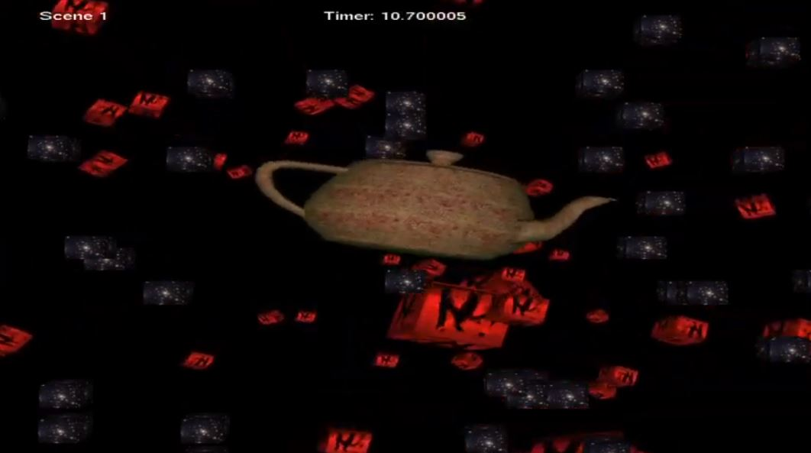

Natalie Harvey's Portfolio
Ambitious Games Programmer at Staffordshire University. I'm in my second year of University and hope
to have a career in the Games Industry.
About Me
I'm a hardworking programmer who enjoys a challenge. A burning desire to succeed
and overcome obstacles. I did my A-Levels in Maths, Physics and Computer Science
in order to get a strong foundation to program for games.
I first began to enjoy video games whilst playing on the Nintendo 64
and I then began to play on the Wii, Xbox 360, Playstation 4 in my later years.
When choosing my options for GCSE, Computer Science was offered as a choice subject
and upon choosing Computer Science I decided to combine the two things I love.
Programming and Games.
During my time in university I have taken part in 3 Games Jams and plan to do
more. The first was the Freshers Week Game Jam that Staffordshire University
put together during our first week at the University. My team achieved first place
and had a fantastic experience. My second and third Games Jam were the 2018 and 2019
Ukie Games Jams. These were both challenging and I loved the experience in both.


Please take the time to view my professional profiles below.
Portfolio
Throughout A-Levels in Computer Science to University Course in Computer Games Programming, I have built together a portfolio of games and programming projects.
Personal Projects
AI Flocking
Using C++ and following the simple rules of cohesion, alignment and separation made by Craig
Reynolds, these boids(little squares) were created to behave as a flock. Skeleton code was
given that had the squares already made and a few mathematical functions were provided that
did arithmetic on 3D vectors.
C++ // DirectX // Visual Studio
Coded Solution on GitHub
YouTube Video: AI Flocking Video

Reflection:
To expand on this project a few obstacles could be added for the agents to avoid and the wall
clipping could be perfected so the flock travels together. Instead of using small squares to
convey the flocking, images of fish or birds might be better presented.
Fresher's Game Jam
Upon taking part in a game jam in the first week of university, each team was instructed to
create a game with a theme. The theme for our team was Satan . An idea for Satan Runner was
formed. Player controls Satan running on top of a train and must avoid the vicar shots before
reaching the Pope. This was done as part of a team of 5, with my task to code the vicar.
The group came first place in the game jam.
C# // Visual Studio // Unity
Playable Version:
Satan Runner Playable Version
Reflection:
With my job to program the vicor, I've notived that there is a lack of a condition to when the player
moves past him, the water is still shot. This makes the game unfair since the player is unable to
see where the water is coming from to dodge it.
University Assignments
Mario Bros
The task was to take the skeleton code of Mario Bros and make a game out of it whilst
introducing us to Object Orientated Programming. SDL2 and C++ was used. I included text,
enemy AI, music, audio, player movement, wall clipping and scene management.
C++ // Object Orientated Programming // SDL2
YouTube Video: Mario Bros Video

Reflection:
Level 2 could have been created with more game features to increase playability. The background
sprite sheet stretches when the player reaches close to the end. Level 1 had the possibility of
having the floors react to collision from beneath as such in the original game. The text font is
not suitable to the game and the spritesheet required offsets so a better spritesheet for text could
have been implemented.
Making a Scene
One assignment that was completed at university using C++ in the API OpenGL. Shapes were rendered in with textures
and normals. An OBJ Loader was written which read obj files and loaded them into the scene with textures.
C++ // OpenGL // Object Orientated Programming
YouTube Video: Making a Scene Video

Reflection:
I enjoyed this assignment and felt great getting the OBJ loader to read obj files and then to add textures.
A ton was learnt from this assignment about rendering and texturing and I was pleased with how it turned out.
The user interaction was limited to rotating the cubes and camera. To improve this, more functionality to the
scene could have been implemented to make it more interactive such as having an playable objective.
A-Level Computer Science Coursework
In this A-Level Computer Science assignment, a simple 2D platformer game was made. In this game
a ball is controlled and must reach the end without colliding with pyramids. This was done in
Unity using C#. The Ball Platformer was my first game.
C# // Unity // Documentation
Youtube Video: Ball Platformer Video

Reflection:
It is simple game with a large amount of documentation that was involved. The text needs to be
bigger to be more readable and in the top left corner. Instead of a finish point, the platforms
could be precedurally generated with the camera moving on its own accord to incread the replayability.
Special effects added to the gem when picked up would give some feedback to the player as well as
audio.